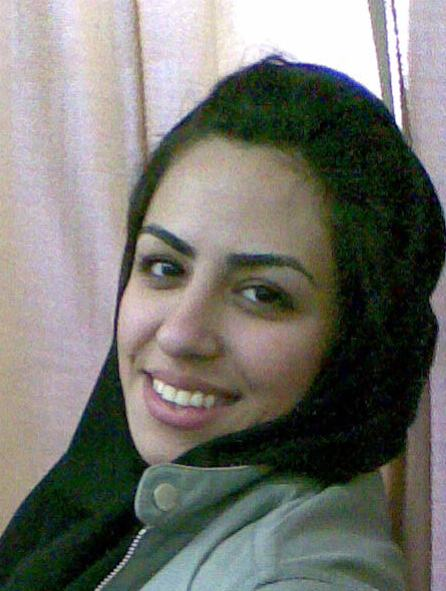

|
|
|
Browsing
Contact Us |
Campaigners |
Face to Face |
Tribune |
Interview |
News |
On the Web |
One Million |
Report
Farsi | Français | German | Italian | Spanish | العربية Also in this section
|
 Collecting Signatures An Appropriate Exampleby: Shahrzad AleDavood Saturday 24 January 2009 Translated by: Sussan Tahmasebi I was returning from university. It was getting dark and it was cold. I only wanted to find a taxi quickly. I had a cold, was losing my voice and had lost my sense of smell. I was lucky. I got into the taxi quickly. I sat in the backseat on the passenger’s side. I wasn’t thinking about much, except how to control my breathing, so that it would not be too loud and disrupt other passengers. The radio was on and the woman’s voice from the Radio was talking about Zeinab, the granddaughter of the Prophet Mhammad. I thought of women and the Campaign. There was a woman sitting next to me. She was dressed in a long overcoat, and looked like a school teacher. I handed her a statement and told her to read it. "If you agree with the statement, you can sign it." There was a young man sitting next to the woman, his hair was sticking straight-up, in a punk hairdo. He looked at the petition with interest and seemed curious. I didn’t want to give him a statement by any means. But he asked for one on his own. This request attracted the attention of the woman sitting on the passenger’s side of the front seat of the Taxi. She was fully veiled in a chador. She grabbed the right corner of her veil, and turned her head to take a look at me. She had on red lipstick. We stared at each other for a few minutes and I handed her a petition—the third one. The driver, with a full head of curly hair, ordered the woman sitting next him to read the petition out loud. "Read it out loud, I want to know what it says too." The woman started reading the petition: "Iranian…la..law.." The curly haired driver addressed me: "Sister, this weakling, is not well educated. You tell me what the statement says." I was stunned by his use of the term weakling. The teacher sitting next to me let out a little laugh. The boy with punk hair do leaned over to get a glimpse of my reaction. The veiled woman with the red lipstick had no reaction. At that moment I was so upset, that I was willing to walk all the way home in the cold, with my runny nose, rather than provide an explanation to this man, who referred to women as weaklings, but it seemed that I had no choice. I said with some hesitation: "the statement discusses discriminatory laws in Iran …" I was nervous and moving my right hand way too much. So, I placed it behind me and leaned back. "Well…?" asked the driver. "Well, it is mostly about women…, I mean about laws that deal with women’s rights." This time I was moving my left hand around way too much. The short silence was broken with another question by the driver. "What laws do you mean, for example?" "Well.., the right, to…the right to divorce. Currently men have the right to divorce their wives at whim, but for women its very difficult and they don’t have many rights in this respect." The veiled woman signed the petition. When the curly haired driver noticed that the woman sitting next to him had signed the petition, he slammed on the breaks. He pulled the car to the curb and started yelling: "If you want the right to divorce, just say so…I’ll send you back to your father…he’ll see too it…" I decided to get out of the taxi. I took the petitions from the teacher and the punk haired boy, who hadn’t signed and the veiled woman who had signed, handed the driver my fare and got out. I couldn’t feel the cold. I felt guilty and at fault for starting the fight between the taxi driver and his wife. But then I thought to myself, that instead of feeling guilt, I should congratulate myself, for having awakened the forgotten courage of the veiled woman. I walked the rest of the way home. |